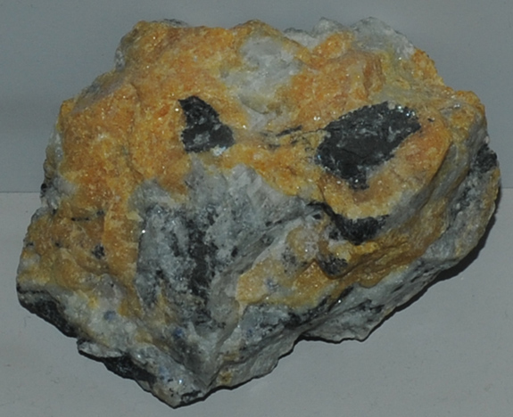

|

| (Na,Ca)8(Si6Al6)O24(CO3)2
This sample of cancrinite is displayed in the Smithsonian Museum of Natural History. Cancrinite is a silicate mineral with sodium, calcium and aluminum with the composition (Na,Ca)8(Si6Al6)O24(CO3)2. The sample at left is about 8 cm across and is from Litchfield Township, Maine.
|